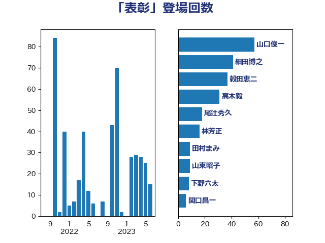

単語「表彰」

| 山口俊一 | 自由民主党 | 57 回 |
| 細田博之 | 自由民主党 | 41 回 |
| 穀田恵二 | 日本共産党 | 37 回 |
| 高木毅 | 自由民主党 | 31 回 |
| 尾辻秀久 | 無所属 | 18 回 |
| 林芳正 | 自由民主党 | 16 回 |
| 田村まみ | 国民民主党 | 9 回 |
| 山東昭子 | 自由民主党 | 9 回 |
| 下野六太 | 公明党 | 8 回 |
| 関口昌一 | 自由民主党 | 6 回 |
| 石井準一 | 自由民主党 | 6 回 |
| 岡田直樹 | 自由民主党 | 5 回 |
| 舟山康江 | 国民民主党 | 4 回 |
| 福島みずほ | 社会民主党 | 4 回 |
| 永岡桂子 | 自由民主党 | 3 回 |
| 梅村みずほ | 日本維新の会 | 3 回 |
| 野村哲郎 | 自由民主党 | 2 回 |
| 角田秀穂 | 公明党 | 2 回 |
| 西村康稔 | 自由民主党 | 2 回 |
| 福岡資麿 | 自由民主党 | 2 回 |
| 田村貴昭 | 日本共産党 | 2 回 |
| 松下新平 | 自由民主党 | 2 回 |
| 斉藤鉄夫 | 公明党 | 2 回 |
| 小西洋之 | 立憲民主党 | 2 回 |
| 世耕弘成 | 自由民主党 | 2 回 |
| 一谷勇一郎 | 日本維新の会 | 2 回 |
| 鶴保庸介 | 自由民主党 | 1 回 |
| 高橋光男 | 公明党 | 1 回 |
| 須藤元気 | 無所属 | 1 回 |
| 長谷川英晴 | 自由民主党 | 1 回 |
| 長浜博行 | 無所属 | 1 回 |
| 長友慎治 | 国民民主党 | 1 回 |
| 鈴木宗男 | 日本維新の会 | 1 回 |
| 金田勝年 | 自由民主党 | 1 回 |
| 金子恭之 | 自由民主党 | 1 回 |
| 遠藤良太 | 日本維新の会 | 1 回 |
| 赤池誠章 | 自由民主党 | 1 回 |
| 西銘恒三郎 | 自由民主党 | 1 回 |
| 萩生田光一 | 自由民主党 | 1 回 |
| 若林洋平 | 自由民主党 | 1 回 |
| 篠原孝 | 立憲民主党 | 1 回 |
| 福山哲郎 | 立憲民主党 | 1 回 |
| 礒崎哲史 | 国民民主党 | 1 回 |
| 田畑裕明 | 自由民主党 | 1 回 |
| 田名部匡代 | 立憲民主党 | 1 回 |
| 滝波宏文 | 自由民主党 | 1 回 |
| 河野太郎 | 自由民主党 | 1 回 |
| 櫻井充 | 自由民主党 | 1 回 |
| 森田俊和 | 立憲民主党 | 1 回 |
| 森山裕 | 自由民主党 | 1 回 |
| 柘植芳文 | 自由民主党 | 1 回 |
| 松野明美 | 日本維新の会 | 1 回 |
| 松沢成文 | 日本維新の会 | 1 回 |
| 松本剛明 | 自由民主党 | 1 回 |
| 本村伸子 | 日本共産党 | 1 回 |
| 新藤義孝 | 自由民主党 | 1 回 |
| 岸田文雄 | 自由民主党 | 1 回 |
| 岩屋毅 | 自由民主党 | 1 回 |
| 小熊慎司 | 立憲民主党 | 1 回 |
| 小森卓郎 | 自由民主党 | 1 回 |
| 小寺裕雄 | 自由民主党 | 1 回 |
| 寺田学 | 立憲民主党 | 1 回 |
| 安江伸夫 | 公明党 | 1 回 |
| 太田房江 | 自由民主党 | 1 回 |
| 大島敦 | 立憲民主党 | 1 回 |
| 吉川ゆうみ | 自由民主党 | 1 回 |
| 勝俣孝明 | 自由民主党 | 1 回 |
| 務台俊介 | 自由民主党 | 1 回 |
| 今井絵理子 | 自由民主党 | 1 回 |
| 中司宏 | 日本維新の会 | 1 回 |